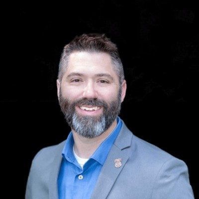

Talent is the mission.
Execution is the difference.
I'm Nick Cox — a U.S. Marine veteran, technical recruiting leader, and builder of smarter talent systems. I help ambitious companies find the people who make complex missions possible.

Measured by outcomes.
My work spans executive, technical, cybersecurity, and go-to-market hiring across global markets.
Marine discipline. Technical fluency. Human judgment.
I began my professional journey in the United States Marine Corps, where accountability and performance under pressure were not optional. With a background in computer science and engineering, I later brought that mindset into recruiting.
Today, I partner with leaders to build teams in identity security, fraud prevention, cloud, engineering, and enterprise go-to-market functions. I believe the best recruiting is not about moving resumes — it's about understanding the mission, evaluating judgment, and earning trust.
I'm also interested in what technology can do for recruiting when automation supports human decision-making instead of replacing it.
Built for complex hiring.
Transmit Security
Senior recruiting leadership · Identity, fraud prevention, cybersecurity and global GTM hiring
Amazon / AWS
Technical recruiting and centralized sourcing · High-volume, high-precision talent identification
ZeroFox
Senior recruiting partnership · Built and scaled cybersecurity consulting recruiting capacity
United States Marine Corps
Military service · A foundation in leadership, urgency, responsibility and resilience
Where people and technology meet.
Technical & Cybersecurity Recruiting
Identity security, CIAM, fraud, cloud, software engineering and technical leadership.
Executive & GTM Talent
Building teams across sales, solutions engineering, customer success and senior leadership.
Recruiting Operations & AI
Practical automation, sourcing workflows, hiring intelligence and human-centered recruiting systems.
TALOS.
Talent Acquisition Leveraged Operating System.
TALOS is my exploration of how recruiting teams can use automation to improve consistency, visibility, and execution — without sacrificing the judgment that makes recruiting effective.
Explore TALOS ↗Independent project. Availability may vary.
“AI can handle volume. People must own the judgment. The strongest teams know the difference.”
Building something that matters?
Whether you're hiring, exploring a career in cybersecurity, or comparing notes on recruiting technology, I'd welcome the conversation.